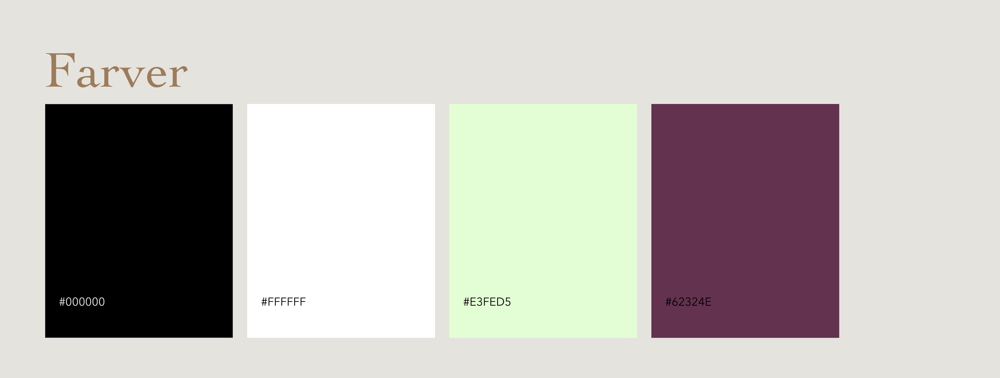
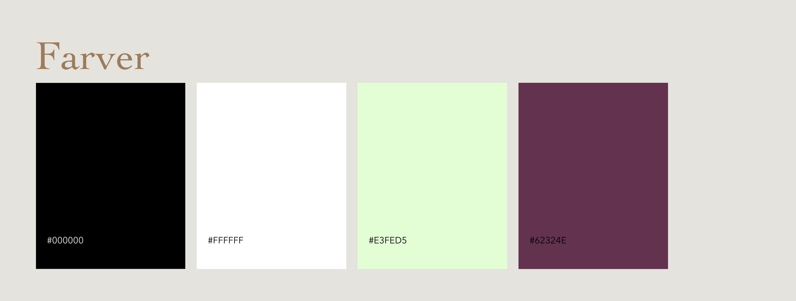

Projekt
02
Grundlæggende UX
I dette tema blev vi introduceret til samspillet mellem brugere og brugergrænseflader.
Der var stor fokus på brugeroplevelsen, og vi arbejdede derfor meget med tests og research.
Temaets opgave bestod i, at designe en webshop-løsning til salg af t-shirts, hvor vi ud fra vores research og indsigter skulle komme frem til en idé.
Vi blev introduceret til forskellige typer af research, hvor vi kunne indsamle både kvalitative og kvantitative data, bl.a. desk research, surveys og interview.
Se idéMin webshop-løsning blev en app, hvor man kunne købe bæredygtige t-shirts i forskellige pasformer og farver. Målgruppen for løsningen var tiltænkt et yngre publikum.
Ved hjælp af et UI-kit opførte jeg en High Fidelity prototype i Adobe XD og lavede efterfølgende en tænke-højt-test på mine medstuderende for at se, hvor jeg evt. kunne forbedre appen.
Se prototypeSom afslutning på projektet forberedte jeg en pitch af projektet, som jeg fremlagde for min studiegruppe.
Her fremlagde jeg min overordnede idé på baggrund af min research, uddybede og fremviste nogle enkelte features ved min app og fremlagde de vigtigeste ændringer jeg havde lavet som følge af tænke-højt testen.
 
